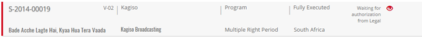
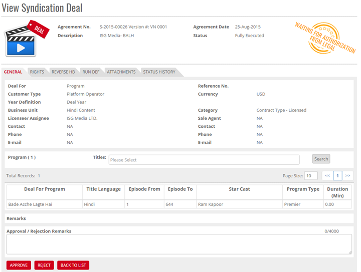
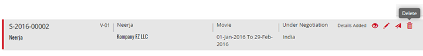
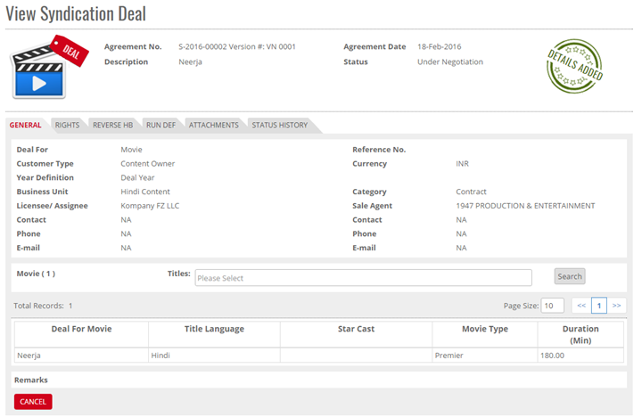


	<section>
		<article>
			<h2>Send for Approval<span></span></h2>
			<div>
				<p></p>

				<p>Select the Radio button for a deal which you want to send for Approval. On selection of radio button Edit, Send for Authorization, and view button will be shown in end of the page.</p> 

				<p>Click <b>Send for Approval</b>, on click a confirmation message shows as "Are you sure, you want to send this Deal for Approval?" with OK and Cancel button, Click <b>OK</b>. Deal will be sent for approval and an alert message will be shown as "Deal successfully sent for Approval". Click <b>CANCEL</b> and deal will not sent for Authorization.</p>

				<p>Once Record is Sent for authorization than the Status will be "Waiting for authorization from 'Approver security group name' ".</p>

				<div class="triangle-border top">				
					
				</div>

				<p><b>Note:</b> Authorized Person can Approve/Reject the Syndication Deal.</p>

				<p><b>Approving/Rejecting Syndication Deal:</b> Click Approval List Tab. </p>

				<p>Select any Syndication Deal from the list whose Approval Status is waiting for authorization 'role name'. On selection of radio button Approve/Reject button will be shown in end of the page.</p> 

				<div class="triangle-border top">				
					
				</div>

				<p>Approve/Reject page will open in non-editable mode and at the end of the page Approve, Reject and Back to List button will be shown.</p>

				<p>Click Approve button. A confirmation message will appear as "Are you sure, you want to approve this deal?" with OK and Cancel buttons. Click OK to approve deal and Cancel button to cancel approval.</p>

				<p>Approve/Decline Syndication Deal page gets closed and Syndication Deal list page shown, and Sent for approval Syndication Deal Approval status is "Waiting for Authorization 'Role Name'" shown in case multi-user approval role is assigned or else it shows "Approved".</p>

				<p>System does not allowed editing the Syndication Deal until it's approved, all buttons are invisible except View.</p>

				<p>"Waiting for Authorization 'Role Name'" The Role Name shows as per Approval work flow assigned for e.g. Syndication Deal Approval Syndication Deal assigned for 2 stages 1. System Admin 2.Account Manager. Than is should shown as "Waiting for Authorization System Admin".</p>

				<p>Login with System Admin User for same (Approval 1) process will follow for Approval 2 or click Cancel Syndication Deal should not be approved and main page should be shown.</p>


				<p><b>Reject Syndication Deal</b></p>

				<p>Enter <b>Reason for rejecting deal.</b></p>

				<p>Click Reject button. A confirmation message will appear as "Are you sure, you want to Reject this deal?" with OK and Cancel buttons. Click OK to reject the deal and Cancel button to cancel rejection.</p>

				<p>Approve/Decline Syndication Deal page should be closed and Syndication list page should be shown, and Sent for approval Deal Approval status should be Rejected. System will show view, Edit, Re-Send for Approval Button.</p>

				<p><b>Note:</b> Rejected deal can be edited and send for approval by approver himself.</p>

				<p>In case any user will decline the deal than system should follow the same process once again, send for approve, Approval 1, Approval 2.</p>

				<p><b>Delete Syndication Deal</b></p>

				<p>User can remove the Syndication Deal until than Deal was Send for Approval or Approved. Click on Delete icon to remove the Deal. System shows alert message as "Are you sure, you want to delete this record? If click OK record will be removed from the System. Click Cancel there is no operation to remove the deal.</p>

				<div class="triangle-border top">				
					
				</div>

				<p>Shows a Confirmation Message as "Record Deleted Successfully".</p>

				<p><b>Show Error:</b> </p>

				<p>This button will appear if deal has any rights validation issues. Please refer to Syndication deal Validation for more info.</p>

				<p><b>View Syndication Deal</b></p>

				<p>User assigned with the rights to view the page can only view the particular Syndication Deal (Movie).</p>

				<p><b>Note:</b> User cannot perform any operation on Syndication Deal (Movie) List because it is present in non-editable mode.</p>
				
				<div class="triangle-border top">				
					
				</div>
			</div>
		</article>
	</section>